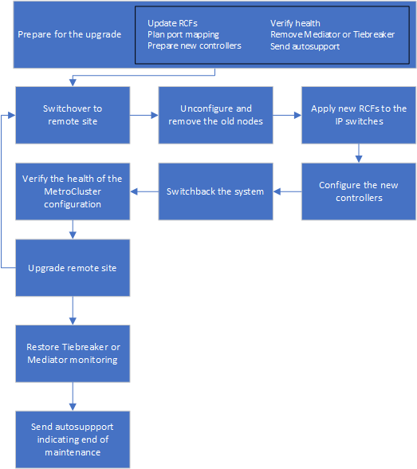
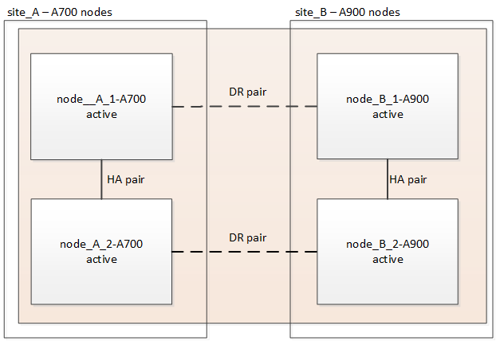

Dokumentationsänderungen beantragen
Dokumentationsänderungen beantragen In GitHub bearbeiten
In GitHub bearbeiten Leitfaden für Beitragende
Leitfaden für BeitragendeController-Upgrade von AFF A700/FAS9000 auf AFF A900/FAS9500 in einer MetroCluster IP-Konfiguration mit Switchover und Switchback (ONTAP 9.10.1 oder höher)
Beitragende
Mit dem MetroCluster Switchover profitieren Kunden von unterbrechungsfreiem Service, während die Controller-Module im Partner-Cluster aktualisiert werden. Andere Komponenten (wie Storage Shelves oder Switches) können nicht im Rahmen dieses Verfahrens aktualisiert werden.
-
Für ein Upgrade der Controller-Module der AFF A700 auf AFF A900 müssen die Controller ONTAP 9.10.1 oder höher ausgeführt werden.
-
Zum Upgrade der FAS9000 Controller-Module auf FAS9500 müssen die Controller ONTAP 9.10.1P3 oder höher ausführen.
-
Upgrades für alle Controller der Konfiguration sollten während des gleichen Wartungszeitraums durchgeführt werden.
Der Betrieb der MetroCluster Konfiguration mit einer AFF A700 und einem AFF A900 oder einem FAS9000 und FAS9500 Controller wird außerhalb dieser Wartungsaktivitäten nicht unterstützt.
-
Auf den IP-Switches muss eine unterstützte Firmware-Version ausgeführt werden.
-
Auf den neuen Plattformen werden die IP-Adressen, Netmasken und Gateways der ursprünglichen Plattformen wiederverwendet.
-
Die folgenden Beispielnamen werden in diesem Verfahren sowohl in Beispielen als auch in Grafiken verwendet:
-
Standort_A
-
Vor dem Upgrade:
-
Node_A_1-A700
-
Node_A_2-A700
-
-
Nach dem Upgrade:
-
Node_A_1-A900
-
Node_A_2-A900
-
-
-
Standort_B
-
Vor dem Upgrade:
-
Node_B_1-A700
-
Node_B_2-A700
-
-
Nach dem Upgrade:
-
Node_B_1-A900
-
Node_B_2-A900
-
-
-
Workflow für das Upgrade von Controllern in einer MetroCluster IP-Konfiguration
Mithilfe des Workflow-Diagramms können Sie Upgrade-Aufgaben planen.

Bereiten Sie sich auf das Upgrade vor
Bevor Sie Änderungen an der bestehenden MetroCluster Konfiguration vornehmen, müssen Sie den Zustand der Konfiguration überprüfen, die neuen Plattformen vorbereiten und andere verschiedene Aufgaben ausführen.
Steckplatz 7 beim AFF A700 oder FAS9000 Controller löschen
Die MetroCluster-Konfiguration auf einem AFF A900 oder FAS9500 verwendet einen der Ports auf den DR-Karten in den Steckplätzen 5 und 7. Wenn beim AFF A700 oder der FAS9000 Karten in Steckplatz 7 vorhanden sind, müssen Sie die Karten in andere Steckplätze für alle Nodes des Clusters verschieben.
Aktualisieren Sie die RCF-Dateien des MetroCluster-Switch, bevor Sie die Controller aktualisieren
Sie müssen die RCF-Dateien auf MetroCluster-Switches aktualisieren, wenn Sie dieses Upgrade durchführen. In der folgenden Tabelle sind die für AFF A900/FAS9500 MetroCluster IP-Konfigurationen unterstützten VLAN-Bereiche aufgeführt.
Modell der Plattform |
Unterstützte VLAN-IDs |
|
|
-
Wenn der Switch nicht mit der minimal unterstützten RCF-Dateiversion konfiguriert ist, müssen Sie die RCF-Datei aktualisieren. Informationen zur korrekten RCF-Dateiversion für Ihr Switch-Modell finden Sie im "RcfFileGenerator-Tool". Die folgenden Schritte sind für die RCF-Datei-Anwendung.
-
Bereiten Sie die IP-Schalter für die Anwendung der neuen RCF-Dateien vor.
Folgen Sie den Schritten im Abschnitt Ihres Switch-Anbieters vom "Installation und Konfiguration von MetroCluster IP" Inhalt:
-
Laden Sie die RCF-Dateien herunter und installieren Sie sie.
Befolgen Sie die Schritte unter "Installation und Konfiguration von MetroCluster IP" Inhalt:
Weisen Sie den neuen Nodes Ports von den alten Nodes zu
Beim Upgrade von einer AFF A700 auf ein AFF A900 oder FAS9000 auf FAS9500 werden die Datennetzwerkports, FCP SAN-Adapterports sowie SAS- und NVMe-Storage-Ports nicht geändert. Die Daten-LIFs bleiben dort, wo sie sich während und nach dem Upgrade befinden. Daher sind Sie nicht erforderlich, die Netzwerk-Ports von den alten Nodes den neuen Nodes zuzuordnen.
Überprüfen Sie vor Standort-Upgrade den MetroCluster-Zustand
Vor dem Upgrade müssen Sie den Zustand und die Konnektivität der MetroCluster Konfiguration überprüfen.
-
Überprüfen Sie den Betrieb der MetroCluster-Konfiguration in ONTAP:
-
Prüfen Sie, ob die Knoten multipathed sind:
node run -node node-name sysconfig -aSie sollten diesen Befehl für jeden Node in der MetroCluster-Konfiguration ausgeben.
-
Stellen Sie sicher, dass in der Konfiguration: + keine defekten Festplatten vorhanden sind
storage disk show -brokenSie sollten diesen Befehl für jeden Node in der MetroCluster-Konfiguration ausgeben.
-
Überprüfen Sie auf Statusmeldungen:
system health alert showSie sollten diesen Befehl für jedes Cluster ausgeben.
-
Überprüfen Sie die Lizenzen auf den Clustern:
system license showSie sollten diesen Befehl für jedes Cluster ausgeben.
-
Überprüfen Sie die mit den Knoten verbundenen Geräte:
network device-discovery showSie sollten diesen Befehl für jedes Cluster ausgeben.
-
Vergewissern Sie sich, dass Zeitzone und Uhrzeit auf beiden Standorten richtig eingestellt sind:
cluster date show
Sie sollten diesen Befehl für jedes Cluster ausgeben. Sie können das verwenden
cluster dateBefehl zum Konfigurieren der Zeit- und Zeitzone. -
-
Überprüfen Sie den Betriebsmodus der MetroCluster Konfiguration, und führen Sie eine MetroCluster-Prüfung durch.
-
Bestätigen Sie die MetroCluster-Konfiguration und den Betriebsmodus
normal:
metrocluster show -
Vergewissern Sie sich, dass alle erwarteten Knoten angezeigt werden:
metrocluster node show -
Geben Sie den folgenden Befehl ein:
metrocluster check run -
Ergebnisse der MetroCluster-Prüfung anzeigen:
metrocluster check show
-
-
Prüfen Sie die MetroCluster-Verkabelung mit dem Tool Config Advisor.
-
Laden Sie Config Advisor herunter und führen Sie sie aus.
-
Überprüfen Sie nach dem Ausführen von Config Advisor die Ausgabe des Tools und befolgen Sie die Empfehlungen in der Ausgabe, um die erkannten Probleme zu beheben.
-
Sammeln Sie vor dem Upgrade Informationen
Vor dem Upgrade müssen Informationen für alle Nodes gesammelt und bei Bedarf die Netzwerk-Broadcast-Domänen angepasst, beliebige VLANs und Schnittstellengruppen entfernt und Verschlüsselungsinformationen gesammelt werden.
-
Notieren Sie die physische Verkabelung für jeden Node und kennzeichnen Sie die Kabel nach Bedarf, damit die neue Nodes ordnungsgemäß verkabelt werden.
-
Sammeln Sie die Ausgabe der folgenden Befehle für jeden Node:
-
metrocluster interconnect show -
metrocluster configuration-settings connection show -
network interface show -role cluster,node-mgmt -
network port show -node node_name -type physical -
network port vlan show -node node-name -
network port ifgrp show -node node_name -instance -
network port broadcast-domain show -
network port reachability show -detail -
network ipspace show -
volume show -
storage aggregate show -
system node run -node node-name sysconfig -a -
vserver fcp initiator show -
storage disk show -
metrocluster configuration-settings interface show
-
-
Erfassen Sie die UUIDs für Site_B (die Site, an der die Plattformen gerade aktualisiert werden):
metrocluster node show -fields node-cluster-uuid, node-uuidDiese Werte müssen auf den neuen Controller-Modulen „Site_B“ genau konfiguriert werden, um eine erfolgreiche Aktualisierung zu gewährleisten. Kopieren Sie die Werte in eine Datei, damit Sie sie später im Upgrade-Prozess in die richtigen Befehle kopieren können. + im folgenden Beispiel wird die Befehlsausgabe mit den UUIDs angezeigt:
cluster_B::> metrocluster node show -fields node-cluster-uuid, node-uuid (metrocluster node show) dr-group-id cluster node node-uuid node-cluster-uuid ----------- --------- -------- ------------------------------------ ------------------------------ 1 cluster_A node_A_1-A700 f03cb63c-9a7e-11e7-b68b-00a098908039 ee7db9d5-9a82-11e7-b68b-00a098908039 1 cluster_A node_A_2-A700 aa9a7a7a-9a81-11e7-a4e9-00a098908c35 ee7db9d5-9a82-11e7-b68b-00a098908039 1 cluster_B node_B_1-A700 f37b240b-9ac1-11e7-9b42-00a098c9e55d 07958819-9ac6-11e7-9b42-00a098c9e55d 1 cluster_B node_B_2-A700 bf8e3f8f-9ac4-11e7-bd4e-00a098ca379f 07958819-9ac6-11e7-9b42-00a098c9e55d 4 entries were displayed. cluster_B::*
Es wird empfohlen, die UUIDs in eine Tabelle wie die folgende aufzunehmen.
Cluster oder Node
UUID
Cluster_B
07958819-9ac6-11e7-9b42-00a098c9e55d
Node_B_1-A700
F37b240b-9ac1-11e7-9b42-00a098c9e55d
Node_B_2-A700
Bf8e3f8f-9ac4-11e7-bd4e-00a098ca379f
Cluster_A
E7db9d5-9a82-11e7-b68b-00a098908039
Node_A_1-A700
F03cb63c-9a7e-11e7-b68b-00a098908039
Node_A_2-A700
Aa9a7a7a-9a81-11e7-a4e9-00a098908c35
-
Wenn sich die MetroCluster-Nodes in einer SAN-Konfiguration befinden, sammeln Sie die relevanten Informationen.
Sie sollten die Ausgabe der folgenden Befehle erfassen:
-
fcp adapter show -instance -
fcp interface show -instance -
iscsi interface show -
ucadmin show
-
-
Wenn das Root-Volume verschlüsselt ist, erfassen und speichern Sie die für das Schlüsselmanagement verwendete Passphrase:
security key-manager backup show -
Wenn die MetroCluster Nodes Verschlüsselung für Volumes oder Aggregate nutzen, kopieren Sie Informationen zu Schlüsseln und Passphrases. Weitere Informationen finden Sie unter "Manuelles Backup der integrierten Verschlüsselungsmanagementinformationen".
-
Wenn Onboard Key Manager konfiguriert ist:
security key-manager onboard show-backup+ Sie benötigen die Passphrase später im Upgrade-Verfahren. -
Wenn das Enterprise-Verschlüsselungsmanagement (KMIP) konfiguriert ist, geben Sie die folgenden Befehle ein:
security key-manager external show -instance security key-manager key query
-
-
Ermitteln Sie die System-IDs der vorhandenen Nodes:
metrocluster node show -fields node-systemid,ha-partner-systemid,dr-partner-systemid,dr-auxiliary-systemidDie folgende Ausgabe zeigt die neu zugewiesen Laufwerke.
::> metrocluster node show -fields node-systemid,ha-partner-systemid,dr-partner-systemid,dr-auxiliary-systemid dr-group-id cluster node node-systemid ha-partner-systemid dr-partner-systemid dr-auxiliary-systemid ----------- ----------- -------- ------------- ------------------- ------------------- --------------------- 1 cluster_A node_A_1-A700 537403324 537403323 537403321 537403322 1 cluster_A node_A_2-A700 537403323 537403324 537403322 537403321 1 cluster_B node_B_1-A700 537403322 537403321 537403323 537403324 1 cluster_B node_B_2-A700 537403321 537403322 537403324 537403323 4 entries were displayed.
Entfernen Sie die Mediator- oder Tiebreaker-Überwachung
Vor dem Aktualisieren der Plattformen müssen Sie die Überwachung entfernen, wenn die MetroCluster-Konfiguration mit dem Tiebreaker oder Mediator Utility überwacht wird.
-
Sammeln Sie die Ausgabe für den folgenden Befehl:
storage iscsi-initiator show -
Entfernen Sie die vorhandene MetroCluster-Konfiguration von Tiebreaker, Mediator oder einer anderen Software, die die Umschaltung initiieren kann.
Sie verwenden…
Gehen Sie folgendermaßen vor:
Tiebreaker
"Entfernen von MetroCluster-Konfigurationen" Beim MetroCluster Tiebreaker Installations- und Konfigurationsinhalt
Mediator
Geben Sie den folgenden Befehl an der ONTAP-Eingabeaufforderung ein:
metrocluster configuration-settings mediator removeApplikationen von Drittanbietern
Siehe Produktdokumentation.
Senden Sie vor der Wartung eine individuelle AutoSupport Nachricht
Bevor Sie die Wartung durchführen, sollten Sie eine AutoSupport Meldung ausgeben, um den technischen Support über die laufende Wartung zu informieren. Die Mitteilung des technischen Supports über laufende Wartungsarbeiten verhindert, dass ein Fall eröffnet wird, wenn eine Störung aufgetreten ist.
Diese Aufgabe muss auf jedem MetroCluster-Standort ausgeführt werden.
-
Melden Sie sich bei dem Cluster an.
-
Rufen Sie eine AutoSupport-Meldung auf, die den Beginn der Wartung angibt:
system node autosupport invoke -node * -type all -message MAINT=maintenance-window-in-hoursDer
maintenance-window-in-hoursParameter gibt die Länge des Wartungsfensters an, mit maximal 72 Stunden. Wenn die Wartung vor dem Vergehen der Zeit abgeschlossen ist, können Sie eine AutoSupport-Meldung mit dem Ende des Wartungszeitraums aufrufen:system node autosupport invoke -node * -type all -message MAINT=end -
Wiederholen Sie diese Schritte auf der Partner-Site.
Wechseln Sie über die MetroCluster-Konfiguration
Sie müssen die Konfiguration auf Site_A umschalten, damit die Plattformen auf Site_B aktualisiert werden können.
Diese Aufgabe muss auf Site_A ausgeführt werden
Nach Abschluss dieser Aufgabe ist Site_A aktiv und stellt Daten für beide Standorte bereit. Site_B ist inaktiv und bereit, den Upgrade-Prozess zu starten.

-
Wechseln Sie über die MetroCluster-Konfiguration zu Site_A, damit Site_B-Knoten aktualisiert werden können:
-
Geben Sie den folgenden Befehl auf Site_A aus:
metrocluster switchover -controller-replacement trueDer Vorgang kann einige Minuten dauern.
-
Überwachen Sie den Switchover-Betrieb:
metrocluster operation show -
Nach Abschluss des Vorgangs bestätigen Sie, dass die Nodes sich im Switchstatus befinden:
metrocluster show -
Den Status der MetroCluster-Knoten überprüfen:
metrocluster node show
Das automatische Heilen von Aggregaten nach der ausgehandelten Umschaltung wird während eines Controller-Upgrades deaktiviert. Nodes an Site_B werden angehalten und am angehalten
LOADEREingabeaufforderung: -
Entfernen Sie das Controller-Modul der AFF A700 oder FAS9000 Plattform und NVS
Wenn Sie nicht bereits geerdet sind, sollten Sie sich richtig Erden.
-
Ermitteln Sie die Bootarg-Werte von beiden Knoten an Site_B:
printenv -
Schalten Sie das Chassis an Site_B. aus
Entfernen Sie das AFF A700 oder das FAS9000 Controller-Modul
Gehen Sie wie folgt vor, um das AFF A700 oder das FAS9000 Controller-Modul zu entfernen
-
Trennen Sie gegebenenfalls das Konsolenkabel und das Managementkabel vom Controller-Modul, bevor Sie das Controller-Modul entfernen.
-
Entriegeln und entfernen Sie das Controller-Modul aus dem Gehäuse.
-
Schieben Sie die orangefarbene Taste am Nockengriff nach unten, bis sie entsperrt ist.


Freigabetaste für den CAM-Griff

CAM-Griff
-
Drehen Sie den Nockengriff so, dass er das Controller-Modul vollständig aus dem Gehäuse herausrückt, und schieben Sie dann das Controller-Modul aus dem Gehäuse. Stellen Sie sicher, dass Sie die Unterseite des Controller-Moduls unterstützen, während Sie es aus dem Gehäuse schieben.
-
Entfernen Sie das AFF A700 oder das FAS9000 NVS-Modul
Entfernen Sie das AFF A700 oder das FAS9000 NVS-Modul wie folgt:
Hinweis: Das NVS-Modul befindet sich in Steckplatz 6 und ist doppelt so hoch wie andere Module im System.
-
Entriegeln und entfernen Sie den NVS aus Steckplatz 6.
-
Drücken Sie die Taste mit den Buchstaben und der nummerierten Nocken. Die Nockentaste bewegt sich vom Gehäuse weg.
-
Drehen Sie die Nockenverriegelung nach unten, bis sie sich in horizontaler Position befindet. Der NVS löst sich aus dem Gehäuse und bewegt sich ein paar Zentimeter.
-
Entfernen Sie den NVS aus dem Gehäuse, indem Sie an den Zuglaschen an den Seiten der Modulfläche ziehen.

Gerettete und nummerierte E/A-Nockenverriegelung
E/A-Riegel vollständig entriegelt
-
-
Wenn Sie zusätzliche Module verwenden, die als Coredump-Geräte bei der AFF A700 oder FAS9000 NVS verwendet werden, übertragen Sie diese nicht auf den AFF A900 oder FAS9500 NVS. Übertragen Sie keine Teile vom AFF A700 oder FAS9000 Controller-Modul und NVS auf das AFF A900 oder FAS9500 Modul.
Installieren Sie die AFF A900- oder FAS9500 NVS- und Controller-Module
Sie müssen das AFF A900 oder FAS9500 NVS und das Controller-Modul installieren, das Sie im Upgrade-Kit auf beiden Knoten bei Site_B. erhalten haben Verschieben Sie das coredump-Gerät nicht vom AFF A700 oder FAS9000 NVS-Modul in das AFF A900 oder FAS9500 NVS Modul.
Wenn Sie nicht bereits geerdet sind, sollten Sie sich richtig Erden.
Installieren Sie den AFF A900 oder FAS9500 NVS
Gehen Sie wie folgt vor, um den AFF A900 oder FAS9500 NVS in Steckplatz 6 beider Knoten in Site_B. zu installieren
-
Richten Sie den NVS an den Kanten der Gehäuseöffnung in Steckplatz 6 aus.
-
Schieben Sie den NVS vorsichtig in den Schlitz, bis der vorletzte und nummerierte E/A-Nockenriegel mit dem E/A-Nockenstift einrastet. Drücken Sie dann den E/A-Nockenverschluss bis zum Verriegeln des NVS.
Gerettete und nummerierte E/A-Nockenverriegelung
E/A-Riegel vollständig entriegelt
Installieren Sie das AFF A900 oder FAS9500 Controller-Modul.
Gehen Sie wie folgt vor, um das AFF A900 oder FAS9500 Controller-Modul zu installieren.
-
Richten Sie das Ende des Controller-Moduls an der Öffnung im Gehäuse aus, und drücken Sie dann vorsichtig das Controller-Modul zur Hälfte in das System.
-
Drücken Sie das Controller-Modul fest in das Gehäuse, bis es auf die Mittelebene trifft und vollständig sitzt. Die Verriegelung steigt, wenn das Controller-Modul voll eingesetzt ist. Achtung: Um Schäden an den Anschlüssen zu vermeiden, verwenden Sie keine übermäßige Kraft, wenn Sie das Controller-Modul in das Gehäuse schieben.
-
Verkabeln Sie die Management- und Konsolen-Ports mit dem Controller-Modul.
Freigabetaste für den CAM-Griff
CAM-Griff
-
Installieren Sie die zweite X91146A-Karte in Steckplatz 7 jedes Knotens.
-
Stellen Sie die e5b-Verbindung auf e7b.
-
schieben Sie die e5a-Verbindung auf e5b.

Steckplatz 7 auf allen Knoten des Clusters sollte leer sein, wie in erwähnt Weisen Sie den neuen Nodes Ports von den alten Nodes zu Abschnitt.
-
-
Schalten Sie das Chassis EIN und verbinden Sie die serielle Konsole.
-
Wenn der Knoten nach der BIOS-Initialisierung Autoboot startet, unterbrechen Sie DEN AUTOBOOT, indem Sie Control-C drücken
-
Nach dem Autoboot wird die Eingabeaufforderung DES LOADERS unterbrochen. Wenn Sie das Autoboot nicht während des Bootens unterbrechen und node1 mit dem Booten startet, warten Sie, bis die Eingabeaufforderung Strg-C drücken, um zum Boot-Menü zu wechseln. Nachdem der Node im Boot-Menü angehalten wurde, verwenden Sie Option 8, um den Node neu zu booten und das Autoboot während des Neustarts zu unterbrechen.
-
Legen Sie an der LOADER-Eingabeaufforderung die Standardvariablen für die Umgebung fest: Set-default
-
Speichern Sie die Standardeinstellungen für Umgebungsvariablen:
saveenv
Netzboot-Nodes an Site_B
Nach Austausch des AFF A900 oder FAS9500 Controller-Moduls und der NVS müssen Sie die AFF A900 oder FAS9500 Nodes als Netzboot einsetzen. Die ONTAP-Version und die Patch-Ebene, die auf dem Cluster ausgeführt werden, müssen dann installiert werden. Der Begriff Netzboot bedeutet, dass Sie über ein ONTAP Image, das auf einem Remote Server gespeichert ist, booten. Wenn Sie das Netzboot vorbereiten, müssen Sie eine Kopie des ONTAP 9 Boot Images auf einen Webserver hinzufügen, auf den das System zugreifen kann. Es ist nicht möglich, die auf den Boot-Medien eines AFF A900 oder FAS9500 Controller-Moduls installierte ONTAP Version zu prüfen, es sei denn, sie ist in einem Chassis installiert und eingeschaltet. Die ONTAP Version auf dem AFF A900 oder FAS9500 Boot-Medium muss mit der ONTAP Version übereinstimmen, die auf dem AFF A700 oder FAS9000 System ausgeführt wird und bei dem Upgrade der Primär- und der Backup Boot Images übereinstimmen. Sie können die Images konfigurieren, indem Sie einen Netzboot gefolgt vom ausführen wipeconfig Befehl aus dem Startmenü. Wenn das Controller-Modul zuvor in einem anderen Cluster verwendet wurde, führt das aus wipeconfig Mit dem Befehl wird die Restkonfiguration auf dem Boot-Medium gelöscht.
-
Vergewissern Sie sich, dass Sie mit dem System auf einen HTTP-Server zugreifen können.
-
Sie müssen die erforderlichen Systemdateien für Ihr System sowie die korrekte Version von ONTAP von der NetApp Support-Website herunterladen.
Wenn die installierte ONTAP Version nicht mit der auf den ursprünglichen Controllern installierten Version identisch ist, müssen Sie die neuen Controller als Netzboot ausführen. Nachdem Sie jeden neuen Controller installiert haben, starten Sie das System über das auf dem Webserver gespeicherte ONTAP 9-Image. Anschließend können Sie die richtigen Dateien auf das Boot-Medium herunterladen, um später das System zu booten.
-
Auf das zugreifen "NetApp Support Website" Zum Herunterladen der Dateien zum Ausführen des Netzboots des Systems.
-
Laden Sie die entsprechende ONTAP Software im Software Download Bereich der NetApp Support Site herunter und speichern Sie die
ontap-version_image.tgzDatei in einem webbasierten Verzeichnis. -
Wechseln Sie in das Verzeichnis für den Zugriff über das Internet, und stellen Sie sicher, dass die benötigten Dateien verfügbar sind.
-
Ihre Verzeichnisliste sollte ontap_Version\_image.tgz enthalten.
-
Konfigurieren Sie die Netzboot-Verbindung, indem Sie eine der folgenden Aktionen auswählen.
Sie sollten den Management-Port und die IP als Netzboot-Verbindung verwenden. Verwenden Sie keine Daten-LIF-IP, oder es kann während des Upgrades ein Datenausfall auftreten. Wenn das Dynamic Host Configuration Protocol (DCHP)…
Dann…
Wird Ausgeführt
Konfigurieren Sie die Verbindung automatisch mit dem folgenden Befehl an der Eingabeaufforderung der Boot-Umgebung:
ifconfig e0M -autoNicht Ausgeführt
Konfigurieren Sie die Verbindung manuell mit dem folgenden Befehl an der Eingabeaufforderung der Boot-Umgebung:
ifconfig e0M -addr=<filer_addr> -mask=<netmask> -gw=<gateway> - dns=<dns_addr> domain=<dns_domain><filer_addr>Ist die IP-Adresse des Storage-Systems.<netmask>Ist die Netzwerkmaske des Storage-Systems.<gateway>Ist das Gateway für das Storage-System.<dns_addr>Ist die IP-Adresse eines Namensservers in Ihrem Netzwerk. Dieser Parameter ist optional.<dns_domain>Der Domain Name (DNS) ist der Domain-Name. Dieser Parameter ist optional. HINWEIS: Andere Parameter können für Ihre Schnittstelle erforderlich sein. Eingabehelp ifconfigDetails finden Sie in der Firmware-Eingabeaufforderung. -
Ausführen eines Netzboots auf Node_B_1:
netboothttp://<web_server_ip/path_to_web_accessible_directory>/netboot/kernelDer
<path_to_the_web-accessible_directory>Sollten Sie dazu führen, wo Sie das heruntergeladen haben<ontap_version>\_image.tgzIn Schritt 2.
Unterbrechen Sie den Startvorgang nicht. -
Warten Sie, bis der Node_B_1 nun auf dem AFF A900 oder FAS9500 Controller-Modul ausgeführt wird, und zeigen Sie die Startmenüoptionen wie unten dargestellt an:
Please choose one of the following: (1) Normal Boot. (2) Boot without /etc/rc. (3) Change password. (4) Clean configuration and initialize all disks. (5) Maintenance mode boot. (6) Update flash from backup config. (7) Install new software first. (8) Reboot node. (9) Configure Advanced Drive Partitioning. (10) Set Onboard Key Manager recovery secrets. (11) Configure node for external key management. Selection (1-11)?
-
Wählen Sie im Startmenü Option
(7) Install new software first.Mit dieser Menüoption wird das neue ONTAP-Image auf das Startgerät heruntergeladen und installiert. HINWEIS: Ignorieren Sie die folgende Meldung:This procedure is not supported for Non-Disruptive Upgrade on an HA pair.Dieser Hinweis gilt für unterbrechungsfreie ONTAP Software-Upgrades und nicht für Controller-Upgrades.Aktualisieren Sie den neuen Node immer als Netzboot auf das gewünschte Image. Wenn Sie eine andere Methode zur Installation des Images auf dem neuen Controller verwenden, wird möglicherweise das falsche Image installiert. Dieses Problem gilt für alle ONTAP Versionen.
-
Wenn Sie aufgefordert werden, den Vorgang fortzusetzen, geben Sie ein
y, Und wenn Sie zur Eingabe des Pakets aufgefordert werden, geben Sie die URL ein:http://<web_server_ip/path_to_web-accessible_directory>/<ontap_version>\_image.tgz -
Führen Sie die folgenden Teilschritte durch, um das Controller-Modul neu zu booten:
-
Eingabe
nSo überspringen Sie die Backup-Recovery, wenn folgende Eingabeaufforderung angezeigt wird:Do you want to restore the backup configuration now? {y|n} -
Eingabe
y to reboot when you see the following prompt: `The node must be rebooted to start using the newly installed software. Do you want to reboot now? {y|n}Das Controller-Modul wird neu gestartet, stoppt aber im Startmenü, da das Boot-Gerät neu formatiert wurde und die Konfigurationsdaten wiederhergestellt werden müssen.
-
-
Führen Sie an der Eingabeaufforderung den aus
wipeconfigBefehl zum Löschen einer früheren Konfiguration auf dem Startmedium:-
Wenn die folgende Meldung angezeigt wird, beantworten Sie die Antwort
yes:This will delete critical system configuration, including cluster membership. Warning: do not run this option on a HA node that has been taken over. Are you sure you want to continue?: -
Der Node wird neu gebootet, um den abzuschließen
wipeconfigUnd hält dann am Startmenü an.
-
-
Wählen Sie die Option
5Wechseln Sie vom Boot-Menü zum Wartungsmodus. AntwortyesZu den Aufforderungen, bis der Node im Wartungsmodus und die Eingabeaufforderung \* beendet wird. -
Wiederholen Sie diese Schritte zum Netzboot Node_B_2.
Wiederherstellung der HBA-Konfiguration
Je nach Vorhandensein und Konfiguration der HBA-Karten im Controller-Modul müssen Sie diese für die Verwendung Ihres Standorts richtig konfigurieren.
-
Konfigurieren Sie im Wartungsmodus die Einstellungen für alle HBAs im System:
-
Überprüfen Sie die aktuellen Einstellungen der Ports:
ucadmin show -
Aktualisieren Sie die Porteinstellungen nach Bedarf.
Wenn Sie über diese Art von HBA und den gewünschten Modus verfügen…
Befehl
CNA FC
ucadmin modify -m fc -t initiator adapter-nameCNA-Ethernet
ucadmin modify -mode cna adapter-nameFC-Ziel
fcadmin config -t target adapter-nameFC-Initiator
fcadmin config -t initiator adapter-name -
-
Beenden des Wartungsmodus:
haltWarten Sie, bis der Node an der LOADER-Eingabeaufforderung angehalten wird, nachdem Sie den Befehl ausgeführt haben.
-
Starten Sie den Node wieder in den Wartungsmodus, damit die Konfigurationsänderungen wirksam werden:
boot_ontap maint -
Überprüfen Sie die vorgenommenen Änderungen:
Wenn Sie über diese Art von HBA verfügen…
Befehl
CNA
ucadmin showFC
fcadmin show
Legen Sie den HA-Status für die neuen Controller und das Chassis fest
Sie müssen den HA-Status der Controller und des Chassis überprüfen. Bei Bedarf müssen Sie den Status entsprechend Ihrer Systemkonfiguration aktualisieren.
-
Zeigen Sie im Wartungsmodus den HA-Status des Controller-Moduls und des Chassis an:
ha-config showDer HA-Status für alle Komponenten sollte sein
mccip. -
Wenn der angezeigte Systemzustand des Controllers oder Chassis nicht korrekt ist, setzen Sie den HA-Status ein:
ha-config modify controller mccipha-config modify chassis mccip -
Stoppen Sie den Knoten:
haltDer Node sollte am anhalten
LOADER>Eingabeaufforderung: -
Überprüfen Sie auf jedem Node das Systemdatum, die Uhrzeit und die Zeitzone:
show date -
Stellen Sie bei Bedarf das Datum in UTC oder GMT ein:
set date <mm/dd/yyyy> -
Überprüfen Sie die Zeit mit dem folgenden Befehl an der Eingabeaufforderung der Boot-Umgebung:
show time -
Stellen Sie bei Bedarf die Uhrzeit in UTC oder GMT ein:
set time <hh:mm:ss> -
Einstellungen speichern:
saveenv -
Umgebungsvariablen erfassen:
printenv
Aktualisieren Sie die RCF-Dateien des Switches, um die neuen Plattformen aufzunehmen
Sie müssen die Switches auf eine Konfiguration aktualisieren, die die neuen Plattformmodelle unterstützt.
Diese Aufgabe führen Sie an dem Standort mit den derzeit aktualisierten Controllern durch. In den Beispielen, die in diesem Verfahren gezeigt werden, aktualisieren wir zunächst Site_B.
Bei einem Upgrade der Controller On Site_A werden die Switches von Site_A aktualisiert.
-
Bereiten Sie die IP-Schalter für die Anwendung der neuen RCF-Dateien vor.
Befolgen Sie die im Abschnitt für den Switch-Anbieter aufgeführten Schritte im Abschnitt MetroCluster IP Installation and Configuration.
-
Laden Sie die RCF-Dateien herunter und installieren Sie sie.
Folgen Sie den Schritten im Abschnitt Ihres Switch-Anbieters vom "Installation und Konfiguration von MetroCluster IP".
Konfigurieren Sie die neuen Controller
Neue Controller sollten jetzt bereit und verkabelt sein.
Legen Sie die MetroCluster-IP-Bootarg-Variablen fest
Für die neuen Controller-Module müssen bestimmte MetroCluster IP-Bootarg-Werte konfiguriert werden. Die Werte müssen mit den auf den alten Controller-Modulen konfigurierten übereinstimmen.
In dieser Aufgabe verwenden Sie die UUIDs und System-IDs, die bereits im Upgrade-Verfahren in identifiziert wurden "Sammeln von Informationen vor dem Upgrade".
-
Am
LOADER>Eingabeaufforderung: Legen Sie folgende Bootargs auf den neuen Knoten an Standort_B fest:setenv bootarg.mcc.port_a_ip_config local-IP-address/local-IP-mask,0,HA-partner-IP-address,DR-partner-IP-address,DR-aux-partnerIP-address,vlan-idsetenv bootarg.mcc.port_b_ip_config local-IP-address/local-IP-mask,0,HA-partner-IP-address,DR-partner-IP-address,DR-aux-partnerIP-address,vlan-idIm folgenden Beispiel werden die Werte für Node_B_1-A900 mit VLAN 120 für das erste Netzwerk und VLAN 130 für das zweite Netzwerk festgelegt:
setenv bootarg.mcc.port_a_ip_config 172.17.26.10/23,0,172.17.26.11,172.17.26.13,172.17.26.12,120 setenv bootarg.mcc.port_b_ip_config 172.17.27.10/23,0,172.17.27.11,172.17.27.13,172.17.27.12,130
Im folgenden Beispiel werden die Werte für Node_B_2-A900 mit VLAN 120 für das erste Netzwerk und VLAN 130 für das zweite Netzwerk festgelegt:
setenv bootarg.mcc.port_a_ip_config 172.17.26.11/23,0,172.17.26.10,172.17.26.12,172.17.26.13,120 setenv bootarg.mcc.port_b_ip_config 172.17.27.11/23,0,172.17.27.10,172.17.27.12,172.17.27.13,130
-
Bei den neuen Nodes
LOADEREingabeaufforderung, UUUIDs festlegen:setenv bootarg.mgwd.partner_cluster_uuid partner-cluster-UUIDsetenv bootarg.mgwd.cluster_uuid local-cluster-UUIDsetenv bootarg.mcc.pri_partner_uuid DR-partner-node-UUIDsetenv bootarg.mcc.aux_partner_uuid DR-aux-partner-node-UUIDsetenv bootarg.mcc_iscsi.node_uuid local-node-UUID-
Legen Sie die UUIDs auf Node_B_1-A900 fest.
Im folgenden Beispiel werden die Befehle zum Einstellen der UUIDs auf Node_B_1-A900 angezeigt:
setenv bootarg.mgwd.cluster_uuid ee7db9d5-9a82-11e7-b68b-00a098908039 setenv bootarg.mgwd.partner_cluster_uuid 07958819-9ac6-11e7-9b42-00a098c9e55d setenv bootarg.mcc.pri_partner_uuid f37b240b-9ac1-11e7-9b42-00a098c9e55d setenv bootarg.mcc.aux_partner_uuid bf8e3f8f-9ac4-11e7-bd4e-00a098ca379f setenv bootarg.mcc_iscsi.node_uuid f03cb63c-9a7e-11e7-b68b-00a098908039
-
Legen Sie die UUIDs auf Node_B_2-A900 fest:
Im folgenden Beispiel werden die Befehle zum Einstellen der UUIDs auf Node_B_2-A900 angezeigt:
setenv bootarg.mgwd.cluster_uuid ee7db9d5-9a82-11e7-b68b-00a098908039 setenv bootarg.mgwd.partner_cluster_uuid 07958819-9ac6-11e7-9b42-00a098c9e55d setenv bootarg.mcc.pri_partner_uuid bf8e3f8f-9ac4-11e7-bd4e-00a098ca379f setenv bootarg.mcc.aux_partner_uuid f37b240b-9ac1-11e7-9b42-00a098c9e55d setenv bootarg.mcc_iscsi.node_uuid aa9a7a7a-9a81-11e7-a4e9-00a098908c35
-
-
Wenn die Originalsysteme für ADP konfiguriert wurden, aktivieren Sie an der LOADER-Eingabeaufforderung der Ersatz-Nodes ADP:
setenv bootarg.mcc.adp_enabled true -
Legen Sie die folgenden Variablen fest:
setenv bootarg.mcc.local_config_id original-sys-idsetenv bootarg.mcc.dr_partner dr-partner-sys-id
Der setenv bootarg.mcc.local_config_idVariable muss auf die sys-id des original Controller-Moduls, Node_B_1-A700 gesetzt werden.-
Legen Sie die Variablen auf Node_B_1-A900 fest.
Im folgenden Beispiel werden die Befehle zum Einstellen der Werte auf Node_B_1-A900 angezeigt:
setenv bootarg.mcc.local_config_id 537403322 setenv bootarg.mcc.dr_partner 537403324
-
Legen Sie die Variablen auf Node_B_2-A900 fest.
Im folgenden Beispiel werden die Befehle zum Einstellen der Werte auf Node_B_2-A900 angezeigt:
setenv bootarg.mcc.local_config_id 537403321 setenv bootarg.mcc.dr_partner 537403323
-
-
Wenn Sie die Verschlüsselung mit dem externen Schlüsselmanager verwenden, legen Sie die erforderlichen Bootargs fest:
setenv bootarg.kmip.init.ipaddrsetenv bootarg.kmip.kmip.init.netmasksetenv bootarg.kmip.kmip.init.gatewaysetenv bootarg.kmip.kmip.init.interface
Neuzuweisung von Root-Aggregat-Festplatten
Weisen Sie die Root-Aggregat-Festplatten dem neuen Controller-Modul unter Verwendung der zuvor gesammelten Sysiden wieder zu.
Diese Schritte werden im Wartungsmodus ausgeführt.
-
Starten des Systems in den Wartungsmodus:
boot_ontap maint -
Zeigen Sie die Laufwerke auf Node_B_1-A900 in der Eingabeaufforderung Wartungsmodus an:
disk show -aDie Befehlsausgabe zeigt die System-ID des neuen Controller-Moduls (1574774970). Allerdings sind die Root-Aggregat-Festplatten immer noch im Besitz der alten System-ID (537403322). In diesem Beispiel werden keine Laufwerke angezeigt, die sich im Besitz anderer Nodes in der MetroCluster-Konfiguration befinden.
*> disk show -a Local System ID: 1574774970 DISK OWNER POOL SERIAL NUMBER HOME DR HOME ------------ --------- ----- ------------- ------------- ------------- prod3-rk18:9.126L44 node_B_1-A700(537403322) Pool1 PZHYN0MD node_B_1-A700(537403322) node_B_1-A700(537403322) prod4-rk18:9.126L49 node_B_1-A700(537403322) Pool1 PPG3J5HA node_B_1-A700(537403322) node_B_1-700(537403322) prod4-rk18:8.126L21 node_B_1-A700(537403322) Pool1 PZHTDSZD node_B_1-A700(537403322) node_B_1-A700(537403322) prod2-rk18:8.126L2 node_B_1-A700(537403322) Pool0 S0M1J2CF node_B_1-(537403322) node_B_1-A700(537403322) prod2-rk18:8.126L3 node_B_1-A700(537403322) Pool0 S0M0CQM5 node_B_1-A700(537403322) node_B_1-A700(537403322) prod1-rk18:9.126L27 node_B_1-A700(537403322) Pool0 S0M1PSDW node_B_1-A700(537403322) node_B_1-A700(537403322) . . .
-
Weisen Sie die Root-Aggregat-Disks in den Laufwerk-Shelfs den neuen Controllern wieder zu.
Wenn Sie ADP verwenden…
Verwenden Sie dann diesen Befehl…
Ja.
disk reassign -s old-sysid -d new-sysid -r dr-partner-sysidNein
disk reassign -s old-sysid -d new-sysid -
Weisen Sie die Root-Aggregat-Festplatten in den Laufwerk-Shelfs den neuen Controllern neu zu:
disk reassign -s old-sysid -d new-sysidDas folgende Beispiel zeigt die Neuzuweisung von Laufwerken in einer nicht-ADP-Konfiguration:
*> disk reassign -s 537403322 -d 1574774970 Partner node must not be in Takeover mode during disk reassignment from maintenance mode. Serious problems could result!! Do not proceed with reassignment if the partner is in takeover mode. Abort reassignment (y/n)? n After the node becomes operational, you must perform a takeover and giveback of the HA partner node to ensure disk reassignment is successful. Do you want to continue (y/n)? y Disk ownership will be updated on all disks previously belonging to Filer with sysid 537403322. Do you want to continue (y/n)? y
-
Überprüfen Sie, ob die Festplatten des Root-Aggregats korrekt neu zugewiesen sind.
disk showstorage aggr status*> disk show Local System ID: 537097247 DISK OWNER POOL SERIAL NUMBER HOME DR HOME ------------ ------------- ----- ------------- ------------- ------------- prod03-rk18:8.126L18 node_B_1-A900(537097247) Pool1 PZHYN0MD node_B_1-A900(537097247) node_B_1-A900(537097247) prod04-rk18:9.126L49 node_B_1-A900(537097247) Pool1 PPG3J5HA node_B_1-A900(537097247) node_B_1-A900(537097247) prod04-rk18:8.126L21 node_B_1-A900(537097247) Pool1 PZHTDSZD node_B_1-A900(537097247) node_B_1-A900(537097247) prod02-rk18:8.126L2 node_B_1-A900(537097247) Pool0 S0M1J2CF node_B_1-A900(537097247) node_B_1-A900(537097247) prod02-rk18:9.126L29 node_B_1-A900(537097247) Pool0 S0M0CQM5 node_B_1-A900(537097247) node_B_1-A900(537097247) prod01-rk18:8.126L1 node_B_1-A900(537097247) Pool0 S0M1PSDW node_B_1-A900(537097247) node_B_1-A900(537097247) ::> ::> aggr status Aggr State Status Options aggr0_node_B_1 online raid_dp, aggr root, nosnap=on, mirrored mirror_resync_priority=high(fixed) fast zeroed 64-bit
Booten der neuen Controller
Sie müssen die neuen Controller booten, um sicherzustellen, dass die Bootarg-Variablen korrekt sind und, falls erforderlich, die Verschlüsselungswiederherstellungsschritte durchführen.
-
Anhalten der neuen Knoten:
halt -
Wenn der externe Schlüsselmanager konfiguriert ist, legen Sie die zugehörigen Bootargs fest:
setenv bootarg.kmip.init.ipaddr ip-addresssetenv bootarg.kmip.init.netmask netmasksetenv bootarg.kmip.init.gateway gateway-addresssetenv bootarg.kmip.init.interface interface-id -
Überprüfen Sie, ob die Partner-sysid aktuell ist:
printenv partner-sysidFalls Partner-sysid nicht richtig ist, stellen Sie es fest:
setenv partner-sysid partner-sysID -
ONTAP-Startmenü anzeigen:
boot_ontap menu -
Wenn die Stammverschlüsselung verwendet wird, wählen Sie die Startmenü-Option für Ihre Konfiguration für die Schlüsselverwaltung aus.
Sie verwenden…
Diese Startmenüoption auswählen…
Integriertes Verschlüsselungsmanagement
Option 10 und befolgen Sie die Anweisungen, um die erforderlichen Eingaben zur Wiederherstellung oder Wiederherstellung der Schlüsselmanager-Konfiguration bereitzustellen
Externes Verschlüsselungskeymanagement
Option 11 und befolgen Sie die Anweisungen, um die erforderlichen Eingaben zur Wiederherstellung oder Wiederherstellung der Schlüsselmanager-Konfiguration bereitzustellen
-
Wählen Sie im Startmenü die Option
(6) Update flash from backup config.
Mit Option 6 wird der Node vor Abschluss zweimal neu gestartet. Antworten
yZu den Eingabeaufforderungen zur Änderung der System-id. Warten Sie auf die zweite Neustartmeldung:Successfully restored env file from boot media... Rebooting to load the restored env file...
-
Unterbrechen Sie den AUTOMATISCHEN START, um die Controller am LOADER zu stoppen.
Überprüfen Sie auf jedem Knoten die in eingestellten Bootargs "Festlegen der MetroCluster-IP-Bootarg-Variablen" Und korrigieren Sie alle falschen Werte. Gehen Sie nur zum nächsten Schritt, nachdem Sie die Bootarg-Werte überprüft haben. -
Überprüfen Sie doppelt, ob die Partner-Sysid die richtige ist:
printenv partner-sysidFalls Partner-sysid nicht richtig ist, stellen Sie es fest:
setenv partner-sysid partner-sysID -
Wenn die Stammverschlüsselung verwendet wird, wählen Sie die Startmenü-Option für Ihre Konfiguration für die Schlüsselverwaltung aus.
Sie verwenden…
Diese Startmenüoption auswählen…
Integriertes Verschlüsselungsmanagement
Option 10 und befolgen Sie die Anweisungen, um die erforderlichen Eingaben zur Wiederherstellung oder Wiederherstellung der Schlüsselmanager-Konfiguration bereitzustellen
Externes Verschlüsselungskeymanagement
Option 11 und befolgen Sie die Anweisungen, um die erforderlichen Eingaben zur Wiederherstellung oder Wiederherstellung der Schlüsselmanager-Konfiguration bereitzustellen
Sie müssen den Wiederherstellungsvorgang durchführen, indem Sie die Option 10 oder Option 11 wählen, abhängig von der Einstellung des Schlüsselmanagers und Option 6 an der Eingabeaufforderung des Startmenüs. Um die Knoten vollständig zu booten, müssen Sie eventuell den Wiederherstellungsvorgang mit Option 1 (normaler Start) durchführen.
-
Warten Sie, bis die neuen Knoten Node_B_1-A900 und Node_B_2-A900 gestartet werden.
Wenn sich einer der beiden Nodes im Übernahmemodus befindet, geben Sie sie mithilfe der wieder
storage failover givebackBefehl. -
Stellen Sie bei Verwendung der Verschlüsselung die Schlüssel mithilfe des korrekten Befehls für Ihre Verschlüsselungsmanagementkonfiguration wieder her.
Sie verwenden…
Befehl
Integriertes Verschlüsselungsmanagement
security key-manager onboard syncWeitere Informationen finden Sie unter "Wiederherstellung der integrierten Schlüssel für das Verschlüsselungsmanagement".
Externes Verschlüsselungskeymanagement
`security key-manager external restore -vserver SVM -node node -key-server _host_name
-
Vergewissern Sie sich, dass sich alle Ports in einer Broadcast-Domäne befinden:
-
Broadcast-Domänen anzeigen:
network port broadcast-domain show -
Fügen Sie bei Bedarf beliebige Ports zu einer Broadcast-Domäne hinzu.
-
VLANs und Schnittstellengruppen nach Bedarf neu erstellen.
VLAN und Interface Group Mitgliedschaft können sich von der des alten Node unterscheiden.
-
Überprüfung und Wiederherstellung der LIF-Konfiguration
Vergewissern Sie sich, dass LIFs zu Beginn des Upgrade-Vorgangs auf entsprechenden Nodes und Ports gehostet werden, die zugeordnet sind.
-
Diese Aufgabe wird auf Site_B. ausgeführt
-
Sehen Sie sich den Port-Mapping-Plan an, den Sie in erstellt haben "Zuordnen von Ports von den alten Nodes zu den neuen Nodes".
-
Stellen Sie vor dem Wechsel sicher, dass LIFs auf dem entsprechenden Node und den entsprechenden Ports gehostet werden.
-
Ändern Sie die erweiterte Berechtigungsebene:
set -privilege advanced -
Port-Konfiguration überschreiben, um korrekte LIF-Platzierung zu gewährleisten:
vserver config override -command "network interface modify -vserver vserver_name -home-port active_port_after_upgrade -lif lif_name -home-node new_node_name"
Wenn Sie den Befehl zur Änderung der Netzwerkschnittstelle in eingeben
vserver config overrideBefehl, Sie können die Funktion Autovervollständigung auf der Registerkarte nicht verwenden. Sie können das Netzwerk erstelleninterface modifyVerwenden Sie Autocomplete und schließen Sie es dann in das einvserver config overrideBefehl.-
Zurück zur Administratorberechtigungsebene:
set -privilege admin
-
-
Zurücksetzen der Schnittstellen auf ihren Home-Node:
network interface revert * -vserver vserver-nameFühren Sie diesen Schritt bei allen SVMs aus, falls erforderlich.
Schalten Sie die MetroCluster-Konfiguration zurück
In dieser Aufgabe führen Sie den Vorgang zum zurückwechseln durch, und die MetroCluster-Konfiguration kehrt in den normalen Betrieb zurück. Die Knoten auf Site_A warten noch auf das Upgrade.

-
Stellen Sie das aus
metrocluster node showFühren Sie den Befehl von Site_B aus, und überprüfen Sie die Ausgabe.-
Vergewissern Sie sich, dass die neuen Nodes korrekt dargestellt sind.
-
Überprüfen Sie, ob sich die neuen Nodes im Status „Warten auf den Wechsel zurück“ befinden.
-
-
Führen Sie die Reparatur und den Wechsel durch, indem Sie die erforderlichen Befehle von einem beliebigen Node im aktiven Cluster ausführen (das Cluster, das kein Upgrade durchlaufen hat).
-
Heilen Sie die Datenaggregate:
metrocluster heal aggregates -
Heilen Sie die Root-Aggregate:
metrocluster heal root -
Zurückwechseln des Clusters:
metrocluster switchback
-
-
Überprüfen Sie den Fortschritt des Umschalttaschens:
metrocluster showDer Umkehrvorgang läuft noch, wenn die Ausgabe angezeigt wird
waiting-for-switchback:cluster_B::> metrocluster show Cluster Entry Name State ------------------------- ------------------- ----------- Local: cluster_B Configuration state configured Mode switchover AUSO Failure Domain - Remote: cluster_A Configuration state configured Mode waiting-for-switchback AUSO Failure Domain -Der Umschalttavorgang ist abgeschlossen, wenn der Ausgang normal angezeigt wird:
cluster_B::> metrocluster show Cluster Entry Name State ------------------------- ------------------- ----------- Local: cluster_B Configuration state configured Mode normal AUSO Failure Domain - Remote: cluster_A Configuration state configured Mode normal AUSO Failure Domain -Wenn ein Wechsel eine lange Zeit in Anspruch nimmt, können Sie den Status der in-progress-Basispläne über die überprüfen
metrocluster config-replication resync-status showBefehl. Dieser Befehl befindet sich auf der erweiterten Berechtigungsebene.
Überprüfen Sie den Systemzustand der MetroCluster-Konfiguration
Nach dem Upgrade der Controller-Module müssen Sie den Systemzustand der MetroCluster Konfiguration überprüfen.
Diese Aufgabe kann auf jedem Node der MetroCluster Konfiguration ausgeführt werden.
-
Überprüfen Sie den Betrieb der MetroCluster Konfiguration:
-
Bestätigen Sie die MetroCluster-Konfiguration und den normalen Betriebsmodus:
metrocluster show -
Führen Sie eine MetroCluster-Prüfung durch:
metrocluster check run -
Ergebnisse der MetroCluster-Prüfung anzeigen:
metrocluster check show
-
-
Überprüfen Sie die MetroCluster-Konnektivität und den Status.
-
Prüfen Sie die MetroCluster-IP-Verbindungen:
storage iscsi-initiator show -
Prüfen Sie, ob die Knoten arbeiten:
metrocluster node show -
Überprüfen Sie, ob die MetroCluster IP Schnittstellen aktiv sind:
metrocluster configuration-settings interface show -
Überprüfen Sie, ob lokaler Failover aktiviert ist:
storage failover show
-
Aktualisieren Sie die Knoten auf site_A
Sie müssen die Upgrade-Aufgaben auf Site_A wiederholen
-
Wiederholen Sie die Schritte, um die Knoten auf Standort_A zu aktualisieren. Beginnen Sie mit "Bereiten Sie sich auf das Upgrade vor".
Während Sie die Aufgaben ausführen, werden alle Beispielreferenzen zu den Standorten und Knoten umgekehrt. Wenn das Beispiel für die Umschaltung von site_A verwendet wird, werden Sie von Site_B. umschalten
Stellen Sie die Tiebreaker- oder Mediator-Überwachung wieder her
Nach Abschluss des Upgrades der MetroCluster-Konfiguration können Sie die Überwachung mit dem Tiebreaker oder Mediator Utility fortsetzen.
-
Stellen Sie ggf. die Überwachung mithilfe des Verfahrens für Ihre Konfiguration wieder her.
Sie verwenden… Gehen Sie wie folgt vor Tiebreaker
"Hinzufügen von MetroCluster Konfigurationen" Im Abschnitt MetroCluster Tiebreaker Installation and Configuration.
Mediator
"Konfigurieren des ONTAP Mediator-Dienstes aus einer MetroCluster-IP-Konfiguration" Im Abschnitt MetroCluster IP-Installation und -Konfiguration.
Applikationen von Drittanbietern
Siehe Produktdokumentation.
Senden Sie eine individuelle AutoSupport Nachricht nach der Wartung
Nach Abschluss des Upgrades sollten Sie eine AutoSupport Meldung mit Angaben zum Ende der Wartung senden. Die automatische Case-Erstellung kann also fortgesetzt werden.
-
Um mit der automatischen Erstellung von Support-Cases fortzufahren, senden Sie eine AutoSupport Meldung, um anzugeben, dass die Wartung abgeschlossen ist.
-
Geben Sie den folgenden Befehl ein:
system node autosupport invoke -node * -type all -message MAINT=end -
Wiederholen Sie den Befehl im Partner-Cluster.
-